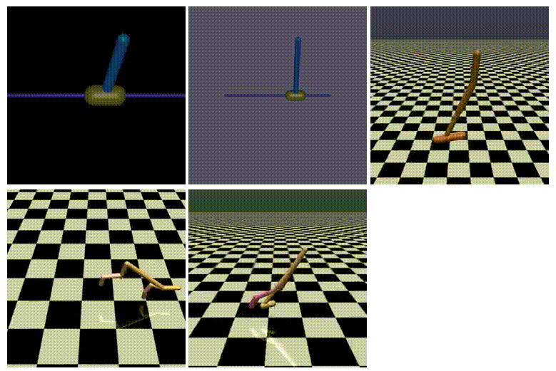

|
|
Aug. 2018 - Jul. 2022 (Expected), Information Engineering Department,
the Chinese University of Hong Kong
,
PhD Candidate
|
|
|
Sept. 2014 - Jun. 2018 , School of Mamagement and Engineering,
Nanjing University
,
Bachelor of Automation
|
|

|
A Novel DDPG Method with Prioritized Experience Replay
Yuenan Hou, Lifeng Liu, Qing Wei, Xudong Xu, Chunlin Chen
IEEE International Conference on Systems, Man, and Cybernetics (SMC), 2017
[pdf]
[code]
We proposed a prioritized experience replay method for the DDPG algorithm,
where prioritized sampling is adopted instead of uniform sampling.
|
-
IERG2080: Introduction to Systems Programming - Fall 2018
Teaching Assistant (TA)
-
Postgraduate Scholarship, the Chinese University of Hong Kong, 2017 ~ now
-
Outstanding Graduate of Nanjing University, 2018
-
Zhenggang Scholarship, Nanjing University, 2017
-
National Scholarship, Nanjing University, 2016
-
National Outstanding Award, China Education Robot Contest, 2015
|